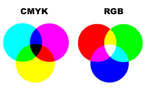

Een kleurmodel is een manier om een kleur numeriek te specificeren of te beschrijven. De twee soorten kleurmodellen die ik ga bespreken zijn het rgb-model en het cmy-model. Achter de lens van bijvoorbeeld de camera van je telefoon zit een beeldcensor. Dit wordt ook wel 'CCD' genoemd. CCD staat voor 'charged-coupled-device'. De CCD bestaat uit miljoenen lichtgevoleige fotocellen. Op het moment dat je een foto maakt, wordt er een momentopname gemaakt van het invallende licht. Dit wordt omgezet in elektrische signalen. Digitale afbeeldingen bestaan uit pixels. Het woord 'pixel' is een combinatie tussen de woorden picture en element.
RGB staat voor Red, Green, Blue.
CMY staat voor Cyaan, Magenta, Yellow. Bij CMYK staat voor Cyaan, Magenta, Yellow, Key.
de verschillen blablabla
